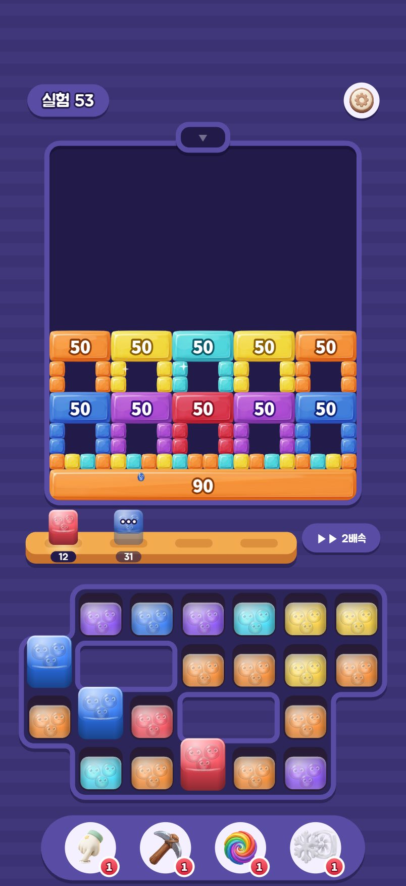
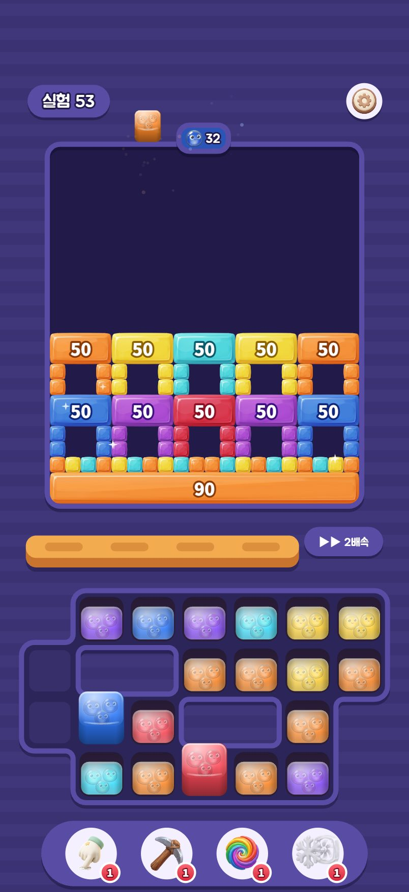
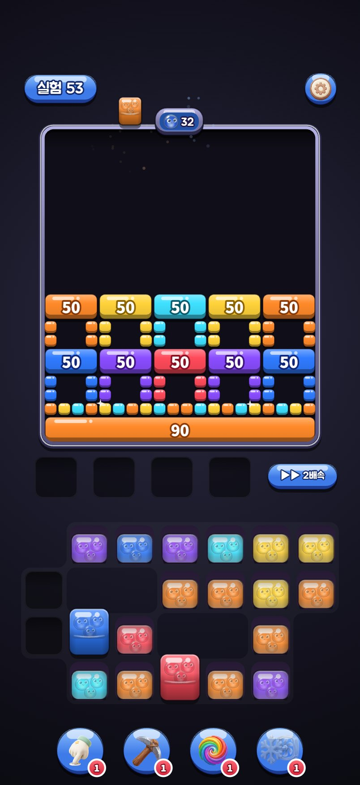

귀환 칸 클레이 화면
핍의 젤리 광산 실험실 「귀환 칸」 판에만 적용했어요(v18.1). 다른 실험실 판과 본편은 그대로예요. 바탕 · 칸은 더 단순하게, 블록 · 상자 · 단추는 빛을 받는 클레이 재질로 바꿨어요.
전과 후





무엇을 바꿨나
- 바탕: 보라 + 가로줄 → 가운데가 살짝 밝고 가장자리로 갈수록 검어지는 명암 한 장
- 대기 칸: 주황 벤치 · 앉는 자리 → 파인 네모 칸만(픽셀플로우처럼 발판 없음). 상자는 칸 가운데, 남은 수는 상자 위 큰 숫자
- 재질: 챔버 광석을 그림 대신 클레이 블록으로 다시 그림 — 위는 밝고 아래는 진한 앞면 띠, 왼쪽 위 흰 반사 띠와 점, 짙은 윤곽, 챔버 바닥에 떨어지는 그림자. 판 상자 · 대기 상자도 같은 반사 · 윤곽 · 그림자
- 테 · 단추: 챔버 테는 참고 영상 레일처럼 빛줄이 있는 관, 레벨 · 설정 · 2배속 · 아이템은 반짝이는 파란 단추(아이템 바는 없앰)
- 판: 판 테두리를 없애고, 쓴 자리는 대기 칸과 같은 파인 네모
- 빛은 모두 왼쪽 위에서 와요. 위험(빈 칸 1개)은 남은 빈 칸이 붉게 숨쉬고, 가득 차면 모든 칸이 붉게 깜빡여요
가득 찼을 때

폰 402px · 360px 폭을 크롬과 아이폰 엔진(WebKit)으로 찍어 겹침 · 오류가 없는 것을 확인했어요. 실제 아이폰에서는 아직 못 봤어요.